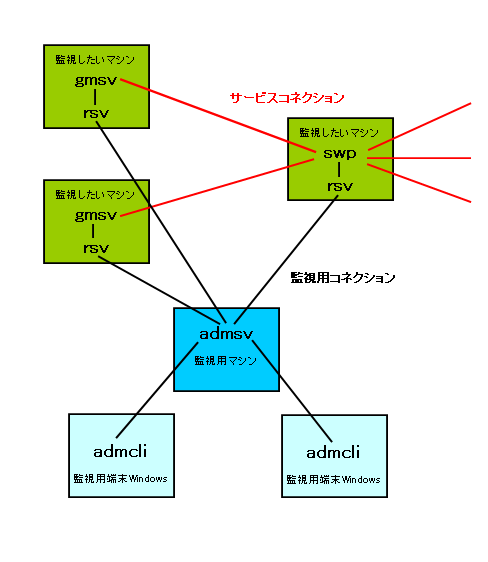

VCE admin tool について
VCE admin toolの目的
VCE admin tool の目的は， VCEを利用したサーバーアプリケーションおよび， システム全体の管理を簡単にすることである。
VCE admin toolの構成要素
VCE admin tool は以下の部分から成りたっています．
- admcli
InnovaDSXP.OCX というDLLを使って作られた GUI インターフェイスである。
admsvに接続し、マシンやプロセスの最新情報の表示や操作ができる。
- admsv
管理用サーバープログラムである。サーバーサイトのどこかに設置し、
常時起動することによって、各サーバとrsvに接続して情報を収集する。
admcliにおけるチャット機能はここで実現される。
- rsv
管理したい各マシンに1個づつこのプロセスを走らせる。
専用のSSHサーバーのようなもので、アプリケーションの外側、マシン自体を
監視する。プロセスを起動したりマシン全体の負荷を測定するのは
rsvが行っている。
- VCE monitor API
各サーバーアプリケーションのプログラムではこのAPIを使ってモニターされる
側として機能を実装し、登録する。
コマンドの実装方法については、
モニターコマンドについて
を参照のこと。
- VCE Log API
ログを統一的なフォーマットで出力するAPIである。
また、ログをadmsvで検索できるようにrsvに転送するLog WriterAPIも含まれる。
- debug_print.c
VCE-Monitorで監視できるようアプリケーションサーバに実装するための
スケルトンコードです。
このコードを使用しなくても、VCE-Monitorは利用可能ですが、
使用することを推奨する。

マシン構成について
rsvは監視したいプロセスが起動するマシンに1つ起動することが必要である。
admsvは他のアプリケーションサーバ(gmsvやswpなど)と同じマシンに同居させることも、
信頼性のために別のマシンに設置することも可能である。
上の図で説明したような構成が典型的である。
機能
現在 VCE admin tool には以下の機能が実装されている。
- 各ホスト、プロセスの情報の取得
- 各ホスト、プロセスのdead/aliveの確認
- 各プロセスの起動、停止
- ユーザーによる権限の制限
- 各プロセスのログを統一的に取得
- 各プロセスのログのリアルタイム監視(grep likeな検索)
- 各ホスト、プロセスへのコマンド実行
index に戻る